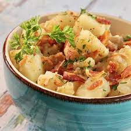

Potato Salad

Description
Tender potatoes tossed in a bacon vinaigrette.
Ingredients
- 3 cups diced potatoes
- 6 slices of bacon
- 1 small onion
- 1/4 cup white vinager
- 2 tbsp water
- 1-2 tbsp sugar, to taste
- 1 tsp salt
- 1/8 tsp ground black pepper
- 2 tbsp chopped fresh parsley
Directions
- Boil potatoes until just cooked enough to easily pierce with fork.
- Fry bacon until browned and crispy. Keep bacon grease. Transfer bacon to plate to cool.
- Once bacon is cool, break into pieces.
- Cook diced onion in the bacon grease until browned.
- Add vinager, water, sugar, salt, and pepper, and bring to boil.
- Toss the potatoes in the dressing.
- Mix in the bacon pieces and parsley, and serve.
Back to Recipes Homepage